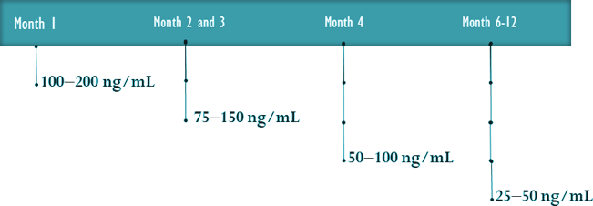
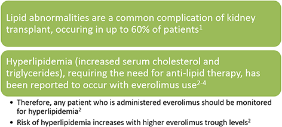

Objectives
- Understand the role of everolimus in de novo kidney transplantation
- Examine the safety profile of everolimus
- Understand the pathophysiology and management of some potential adverse events


Presentation:
- A 56 year old female is referred for evaluation of increased serum creatinine and transplantation
Past history:
- Hypertension; diagnosed 10 years ago
- Membranoproliferative glomerulonephritis diagnosed in 2009
- Peritoneal dialysis since 2010
Other relevant history:
- Family/ Occupational/ Social History:
- Father and mother had hypertension; died age 50 and 70 years respectively
- Never smoked or consumed alcohol
- Retired bank employee
- Current Medications:
- Telmisartan 40 mg once daily
On examination:
- Height: 5’ 4“
- Weight: 82 kg
- BMI: 31
- Blood pressure: 135/90 mm Hg
- Cardiac exam: normal
- Peripheral pulses: normal
- No organomegaly
- Bilateral pedal edema
Laboratory findings:
- HB: 8g/dL
- Serum creatinine: 4.9 mg/dL
- Blood Urea Nitrogen: 120 mg/dL
- Serum pottassium: 7.6 mmol/L
- Serum calcium: 1.6 mmol/L
- eGFR: 12 mL/min/1.73 m2
- Total urinary protein: 0.7 g/24 hr
- Resting ECG: left axis deviation, otherwise normal
- FSG: 100 mg/dL
- HbA1C: 6.5%
- Lipid panel:
- TC: 153 mg/dL
- TG: 220 mg/dL
- HDL-C: 31 mg/dL
- LDL-C: 80 mg/dL
FSG, fasting serum glucose; BUN, blood urea nitrogen; eGFR, estimated glomerular filtration rate; ALT, Alanine transaminase; HbA1C, glycosylated hemoglobin; UA, urinalysis; TSH, thyroid stimulating hormone; ECG, electrocardiography; TC, total cholesterol; TG, triglycerides; HDL-C, high density lipoprotein cholesterol; LDL-C, low density lipoprotein cholesterol; PRA, panel reactive antibody
Kidney transplantation:
- Deceased donor (brain dead, 64-yr-old) KT May 2013
- Immediate function
- Serum Creatinine reduced and stable at 2.0 mg/dl
- Patient discharged on day 9 after surgery
- Basiliximab on day 0 and day 4
- Cyclosporine trough level 100-200 ng/mL
- Everolimus (Certican®) 0.75 mg/12 h since day 1
- Steroids
Zortress® Prescribing Information (updated Feb 2013). Available at: http://www.pharma.us.novartis.com/products/zortress.shtml
The recommended therapeutic range for cyclosporine when administered along with everolimus beyond 1 month of transplantation is?
Recommended therapeutic ranges of cyclosporine when administered with everolimus:
Zortress® Prescribing Information (updated Feb 2013). Available at: http://www.pharma.us.novartis.com/products/zortress.shtml.
Wound complications:
- 4 weeks after the transplant the patient presented with dehiscence of the wound and clear discharge
- Examination revealed superficial wound dehiscence
- Mild oedema, redness and induration of incision site
Lab tests:
- CBC normal
- Blood culture and wound culture did not reveal any infection
Management:
- Surgical repair of the dehiscence
- Steroids tapered and stopped after 1 week
- Everolimus at 0.75 mg/12 hrs
- Cyclosporine dose adjusted for trough level 75-150 ng/mL
Which factors could influence wound healing in general in this population?
Pathophysiology of mTORi associated delayed wound healing:

mTORI: Mammalian target of rapamycin inhibitors
Benhadou F et al. EWMA Journal 2013;13(1):20-22
MMF is a risk factor for wound-healing complications:
Multivariate analysis of risk factors for a fascial dehiscence or
incisional hernia after kidney transplant in 2013 patients, 1984–1998
| Variable | Risk factor | RR | p value |
| Recipient age, years | >50 (vs 18–50) | 2.10 | 0.01 |
| Re-operation through transplant incision |
Yes (vs no) | 54.2 | 0.0001 |
| Immunosuppression | MMF (vs Aza) | 3.54 | 0.0004 |
| BMI, kg/m2 | >30 (vs <30) | 2.82 | 0.0003 |
| Antibody induction | Yes (vs no) | 1.14 | Ns |
| Donor age, years | >55 (vs <55) | 1.08 | Ns |
| Urine leak post-transplant | Yes (vs no) | 0.52 | Ns |
| Acute rejection episode | Yes (vs no) | 0.61 | Ns |
Aza, azathioprine; BMI, body mass index; MMF, mycophenolate mofetil; NS, not significant; RR, relative risk.
Humar A, et al. Transplantation 2001;72:1920–1923.
CALLISTO: similar incidence of wound-healing events with immediate vs delayed EVR:
*Immediate EVR , Day 1; **Delayed EVR , Week 5. EVR, everolimus.
Dantal J, et al. Transpl Int. 2010;23:1084–1093.
A2309: similar incidence of wound-healing events with de novo everolimus 1.5 mg and MPA:
- The approved dose of everolimus in combination with cyclosporine for the prophylaxis of organ rejection in adult patients at low to moderate immunological risk receiving an allogeneic renal transplant is 1.5 mg
EVR, everolimus; MPA, mycophenolic acid.
Tedesco-Silva Jr H et al. Am J Transplant 2010;10:1401–13.
Wound events/lymphocele formation with de novo EVR:
Pooled data from 3 randomized controlled trials

BMI, body mass index; DM, diabetes mellitus; EVR, everolimus; MPA, mycophenolic acid.
Cooper M, et al. Clin Transplant. 2013 [in press]
Safety profile of everolimus:
- Other adverse events reported with use of everolimus include1
- Peripheral edema
- Hyperlipidemia
- Stomatits/mouth ulceration
- Proteinuria
- Most adverse events are present for a short time after the introduction of everolimus, and are manageable2
1. Zortress® Prescribing Information (updated Feb 2013). Available at: http://www.pharma.us.novartis.com/products/zortress.shtml.
2. Holdaas H1, Midtvedt K, Åsberg A. A drug safety evaluation of everolimus in kidney
transplantation. Expert Opin Drug Saf. 2012 Nov;11(6):1013-22.
Proteinuria in kidney transplantation:
Proteinuria is a common finding in the post-transplant setting
Proteinuria and everolimus:
aHR for proteinuria >300 mg/g.
BMI, body mass index; Cr, creatinine; EVR, everolimus; HR, hazard ratio; MPA, mycophenolic acid; Pr, protein.
Wiseman AC, et al. Am J Transplant. 2013;13:442–449.
Proposed mechanisms involved in mTORi mediated proteinuria:
B. Kaplan et al. Transplantation Reviews 2014;28:126–133.
Proteinuria with everolimus is dose dependent:
- Everolimus associated with risk of proteinuria compared to MPA
- Higher trough concentrations associated with a 1.8 fold increase in hazard
- 1.5 mg/day and trough levels adjusted to 3-8 ng/mL associated with a non-significant 1.2 fold increase in risk
Wiseman AC, et al. Am J Transplant. 2013;13:442–449.
Proteinuria and everolimus:
Wiseman AC, et al. Am J Transplant. 2013;13:442–449.
Proteinuria during EVR use:
CAD, chronic allograft dysfunction; CNI, calcineurin inhibitor; EVR, everolimus; mTORi, mammalian target of rapamycin inhibitor.
1.Zortress® Prescribing Information (updated Feb 2013). Available at:http://www.pharma.us.novartis.com/products/zortress.shtml;
2. Diekmann F, et al.
Transplant Rev (Orlando). 2012;26:27-9;
3. Diekmann F, et al. Am J Transplant. 2004;4:1869-75;
4. Cibrik D et al. Transplantation. 2013;95:933-942
A2309: Tolerability with everolimus + low CNI was comparable to that seen with standard CNI:
CNI, calcineurin inhibitor; CsA, cyclosporine; MPA, mycophenolic acid.
Tedesco-Silva H et al. ATC 2011
Risk-benefit outcome:
- Strategy for best risk-benefit outcome
- Everolimus adjusted to maintain a blood concentration of 3-8 ng/mL with
- 60% reduction in the usual doses of cyclosporine
Tedesco-Silva et al. Transplant Research and Risk Management. 2011;3:9–29.
Examination and lab values:
- Wound healed completely
- Serum creatinine 1.6 mg/dL
- Total cholesterol 300 mg/dL
- LDL cholesterol 190 mg/dL
Management:
- Everolimus dose maintained at 0.75 mg/12 hrs
- Cyclosporine dose adjusted for trough level 50-100 ng/mL
- Atorvastatin 20 mg/day
What could be the cause of hyperlipedemia?
Pathophysiology of mTORi associated hyperlipidemia:
Busaidy et al. J Clin Oncol. 2012 Aug 10;30(23):2919-28.
Hyperlipidemia during everolimus use:

CV, cardiovascular; EVR, everolimus; MACE, major adverse cardiac events; MPA, mycophenolic acid.
1. Badiou S, et al. Curr Diab Rep. 2009;9:30511; 2. Zortress® Prescribing information (updated Feb 2013). Available at:
http://www.pharma.us.novartis.com/products/zortress.shtml. 3. Fischer L, et
al. Am J Transplant. 2012;12:1855–65; 4. Tedesco Silva H Jr, et al. Am J Transplant. 2010;10:1401–13.
Reduced incidence of MACE despite hyperlipidemia:

MACE;Major Adverse Cardiac Events, CV;cardiovascular
1. Eisen H. Nephrol Dial Transplant. 2006;21(Suppl 3):iii9–13.
Month 6:
- Examination and lab values
- Serum creatinine 1.2 mg/dL
- LDL cholesterol 110 mg/dL
- Management
- Everolimus 0.75 mg/12 hrs
- Cyclosporine dose adjusted for trough level
25-50 ng/mL - Atorvastatin 20 mg/day continued
Month 24:
- Serum creatinine 1.1 mg/dL
- LDL cholesterol 108 mg/dL
- Everolimus 0.75 mg/12 hrs
- Cyclosporine dose adjusted for trough level
25-50 ng/mL - Atorvastatin 20 mg/day continued
- No anti HLA antibodies
- Serum creatinine stable
- No proteinuria
EVR: a multifaceted drug with the potential to improve long-term outcomes:
CNI, calcineurin inhibitor; CMV, cytomegalovirus. EVR, everolimus.
1. Pascual J. Transplantation. 2005;79(Suppl 9):S76–S79;
2. Eisen H, et al. N Engl J Med. 2003;349:847–858;
3. Vitko S, et al. Am J Transplant. 2005;5:2521–2530;
4. Tedesco-Silva H, et al. Transpl Int. 2007;20:27–36;
5. Nashan B, et al. Transplantation. 2004;78:1332–1340;
6. Nashan B. Transplant Proc. 2001;33:3215–3220;
7. Majewski M, et al. Transplantation. 2003;75:1710–1717;
8. Schuler W, et al. Transplantation. 1997;64:36–
42;
9. Viklicky O, et al. Transplantation. 2000;96:497–502;
10. Koch M, et al. Transplantation. 2007;83:498–505;
11. Andrés V, et al. Nephrol Dial Transplant. 2006;21(Suppl 3):iii14–17;
12. Pascual J, et al. Nephrol Dial Transplant. 2006;21(Suppl 3):iii38–41.
Summary:
- Administer everolimus in combination with basiliximab, reduced dose cyclosporine or tacrolimus* and corticosteroids as soon as possible after kidney transplantation
- The initial dose of everolimus is 0.75 mg twice daily with CsA
- The initial dose of cyclosporine to achieve a trough level of 100-200 ng/mL
- The initial dose with TAC is 1.5 mg twice daily*
- Therapeutic monitoring of both everolimus and CsA is recommended 4-5 days after initiating treatment or dose change
- Everolimus trough concentrations should be in the range of 3-8 ng/mL
- Most AEs associated with everolimus can be adequately managed while on therapy and only a few cases require discontinuation of everolimus
*Off-label use: Everolimus in combination with TAC is not approved in kidney transplantation patients.
AE, adverse events; CsA, cyclosporine A; TAC, tacrolimus.